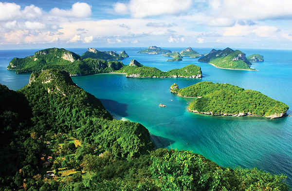
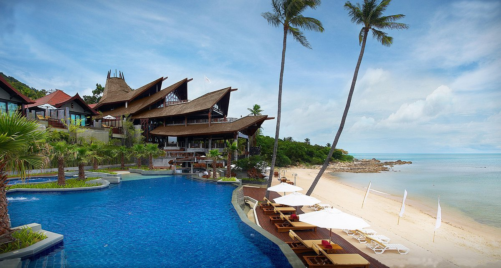
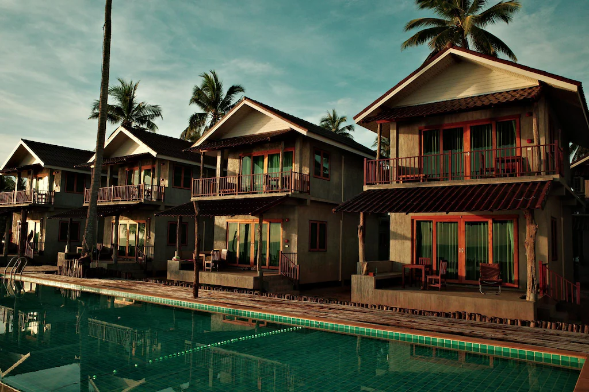

ข้อมูลทั่วไป
- เกาะในทะเลภาคใต้ ฝั่งอ่าวไทย
- มีชายหาดชื่อดัง วิวทะเล บรรยากาศรีสอร์ท
- อยู่ในรายชื่อ “10 Must-Visit Destinations in Thailand” (Bucketlist Bums | World Traveler Blog)
อยู่ที่ไหน / การเดินทาง
- ที่ตั้ง: อ่าวไทย จังหวัดสุราษฎร์ธานี ห่างฝั่งบริเวณอำเภอดอนสัก ~35 กม.
- เครื่องบิน: สนามบินสมุย (USM) มีเที่ยวบินจากกรุงเทพฯ/ภูเก็ต/เชียงใหม่
- เรือเฟอร์รี่: ดอนสัก ↔ สมุย (ท่าเรือหน้าทอน/ลิปะน้อย) โดย Seatran / Lomprayah ~1–1.5 ชม.
- ทางบก+เรือ: รถไฟ/รถบัส → สุราษฎร์ธานี → รถต่อไปท่าเรือดอนสัก → เฟอร์รี่
สิ่งที่น่าสนใจ / ไฮไลต์ / กิจกรรม
- พักผ่อนชายหาด / เดินริมหาด
- เที่ยวเกาะเล็กใกล้เคียง / ดำน้ำตื้น
- เยี่ยมวัดดังบนเกาะ เช่น วัดพระใหญ่
- ชมพระอาทิตย์ขึ้น/ตก / นั่งเรือชมอ่าว
- ช้อปปิ้ง / ดื่ม / ชิลริมหาด
เวลาเปิด/ค่าเข้าชม/ข้อจำกัด
- ชายหาดส่วนใหญ่เปิดตลอดวัน
- บางกิจกรรมมีเวลาให้บริการ (เช่น ทัวร์เกาะ / เรือ)
เคล็ดลับ / คำแนะนำ
- จองที่พัก + ตั๋วเรือ/เครื่องบินล่วงหน้า
- พกชุดว่ายน้ำ / อุปกรณ์ดำน้ำ
- สำรวจเกาะใกล้ ไปเช้า–เย็นกลับ
- ตรวจสภาพอากาศ / คลื่น / ฝน ก่อนออกทริป
ที่พักแนะนำ (ตัวอย่าง)
| ระดับ | ชื่อที่พัก | ราคา/ข้อดี |
|---|---|---|
| พรีเมียม |  Four Seasons Koh Samui Four Seasons Koh Samui |
~ 8,000–25,000 บาท/คืน — วิวทะเล บริการหรู |
| กลาง |  Anantara Lawana Koh Samui Resort Anantara Lawana Koh Samui Resort |
~ 3,000–8,000 บาท/คืน — ใกล้หาด เดินทางสะดวก |
| กลาง-ประหยัด | รีสอร์ทริมหาด | ~ 1,000–3,500 บาท/คืน — ราคาย่อมเยา ใกล้ชายหาด |
| โฮมสเตย์ / บังกะโลเล็ก | บังกะโลริมหาด | ~ 300–1,500 บาท/คืน — ใกล้ทะเล บรรยากาศธรรมชาติ |
ข้อมูลย่อ
จังหวัด: สุราษฎร์ธานี
ประเภท: เกาะ / ชายหาด / รีสอร์ท
เหมาะฤดู: ตลอดปี (ฤดูแล้งทะเลสวย)
ให้ระบบแนะนำทริป